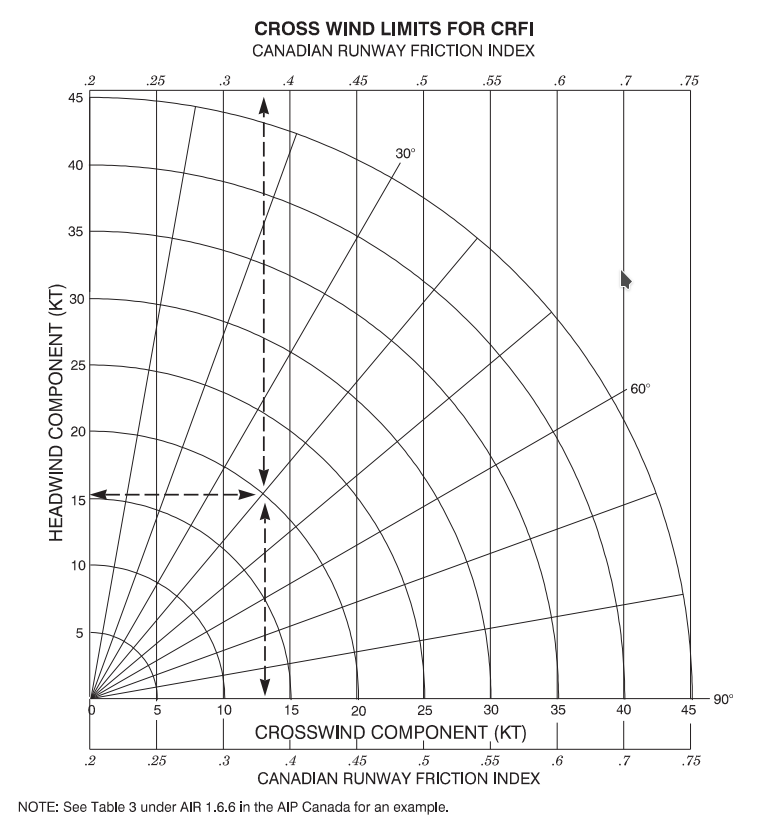

{% extends "layout.html" %}
{% set active_page = "index" %}

{% block title %}
{% endblock %}

{% block main %}
{% if not session.user_id %}
<!--<div class="alert alert-warning alert-dismissible fade show centered" role="alert">
        <span><strong>Warning!</strong> Still in beta stage. Use at your own risk.</span>
        <button type="button" class="close" data-dismiss="alert" aria-label="Close">
        <span aria-hidden="true">&times;</span>
        </button>
    </div>-->
{% endif %}
<div class="container">    
<div class="row">
    <div class="col-12 mt-4">
        <form action="/" method="post" id="stationform">
            <input class="form-control form-control-lg" autocomplete="off" autofocus type="text" name="station" type="text" placeholder="ex: YMX, CYQB, CDG, EGLL" id="station">
            <div class="h6 sm-indication mt-1 ml-1">Enter airport ICAO or IATA code </div>
        </form>
    </div>
</div>

<div class="row">

        <div class="mt-6 col-12 d-flex justify-content-center remove" id="loading">
                <div class="spinner-grow text-primary" role="status">
                    <span class="sr-only">Loading...</span>
                </div>
        </div>

    <div class="col-12 col-md-7 mt-4">

        <p class ="text-center" id="airportname"></p>

        <table class="table table-bordered shadow-sm hidden" id="time_dir_str">
            <thead>
                <tr>
                    <th class = "fix-broken-table1 toprow hidden" data-ph="Weather source" id="wxtypeandtime"><span id="wx_type"></span> <span id="wx_time"></span></td>
                    <th class = "fix-broken-table2 toprow tbcontentedit" data-ph="Wind direction" contenteditable="true" type="number" id="w-direction" onkeypress="return testCharacter(event);">{{ wind_dir | first }}</td>
                    <th class = "fix-broken-table2 toprow tbcontentedit" data-ph="Wind speed" contenteditable="true" type="number" id="w-strength" onkeypress="return testCharacter(event);">{{ wind_str | first }}</td>
                </tr>
            </thead>
        </table>
        <div class="container">
            <div class="row">
                <div class="col-12 mt mb-3 centered">
                    <button type="button" class="btn btn-outline-dark btn-sm mr-4 rounded hidden" id="previous">Previous</button>
                    <button type="button" class="btn btn-outline-dark btn-sm ml-4 rounded hidden" id="next">Next</button>
                </div>
            </div>
            <div class="row hidden" id="table-header">

                <div class="fix-broken-table1 h6 table-explan">
                    Runway
                </div>
                <div class="fix-broken-table2 h6 table-explan">
                    Head (+) / tailwind (-)
                </div>
                <div class="fix-broken-table2 h6 table-explan">
                    Crosswind
                </div>
                <div class="fix-broken-table2 h6 table-explan" data-toggle="modal" data-target="#crosswindchart">
                    <a href="#" id="crfi_link">Min CRFI (crosswind)</a>
                </div>

            </div>
        </div>

        <table class="table table-sm table-bordered">
            <tbody id="rwy_table">
            </tbody>
        </table>
    </div>
    <div class="col-12 col-md-5 mt-4 fira-font h6" id="wx">
        <p class = "formatting" id="metar"></p>
        <ul class = "formatting" id="taf"></ul>
        <p class = "formatting" id="rsc"></p>
    </div>

</div>

<div class="modal 8 fade bd-example-modal-lg" tabindex="-1" role="dialog" aria-labelledby="crosswind_chart" aria-hidden="true" id="crosswindchart">
    <div class="modal-dialog modal-lg">
        <div class="modal-content">
            <div class="modal-header">
                <h5 class="modal-title" id="exampleModalLongTitle">CFS Crosswind chart</h5>
                <button type="button" class="close" data-dismiss="modal" aria-label="Close">
                    <span aria-hidden="true">&times;</span>
            </div>
            <div class="modal-body">
                    
            </div>
            <div class="modal-footer">
                <button type="button" class="btn btn-default btn-secondary" data-dismiss="modal">Close</button>
            </div>
        </div>
    </div>
</div>
</div>


<script src="../static/js/index_script.js" type="application/javascript"></script>
{% endblock %}